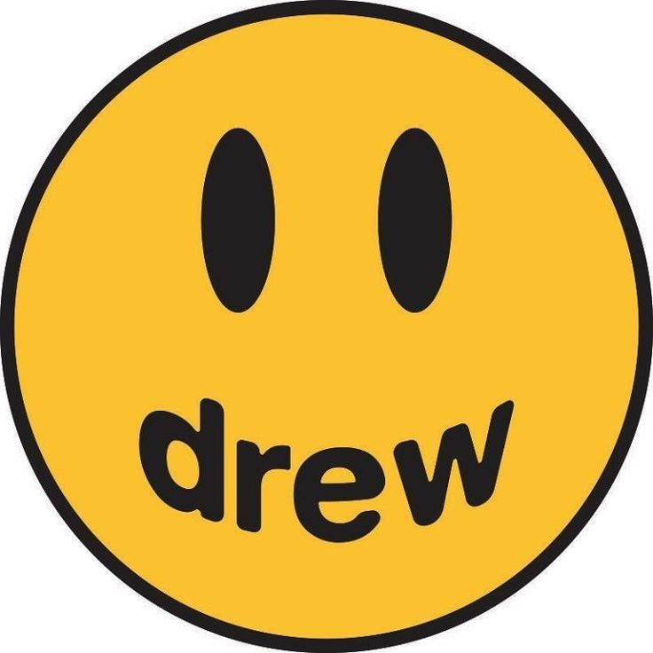

Lacoste

Lacoste es una empresa francesa fabricante de ropa, relojes, perfumes, zapatos, cinturones y maletas, entre muchos otros artículos de lujo. Su producto más famoso, es su camisa Polo, hecha de material piqué. La camisa Polo fue muy famosa en las décadas de los 70 y de los 80 en América y Europa, su fundador es Rene Lacoste , famoso tenista
Versace

Gianni Versace S.p.A., usualmente llamada Versace, es una casa de moda Italiana, fundada por Gianni Versace en 1978 y propiedad de Michael Kors Holdings. En la actualidad, Versace es una de las principales casas de moda del mundo. Versace diseña, comercializa y distribuye vestuario, accesorios, fragancias, maquillaje y muebles de lujo bajo las diversas líneas del Grupo Versace, como: Gianni Versace Couture, Versace Jeans Couture, Versace Home Collection y Versace Collection.
Drew
Dirigido a un público joven, Drew House es una marca de moda deportiva, que recuerda al estilo skater del propio Bieber. Sudaderas, camisetas o pantalones de chándal son algunas y casi sus únicas prendas estrella
Gucci

Gucci es una firma italiana de productos de lujo con sede en Florencia, Italia. Se dedica al diseño y fabricación de artículos de moda tales como ropa, zapatos, joyas, bolsos, relojes y perfumes. Se destacan sus artículos de cuero.